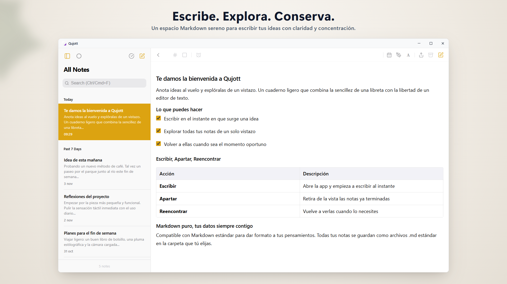
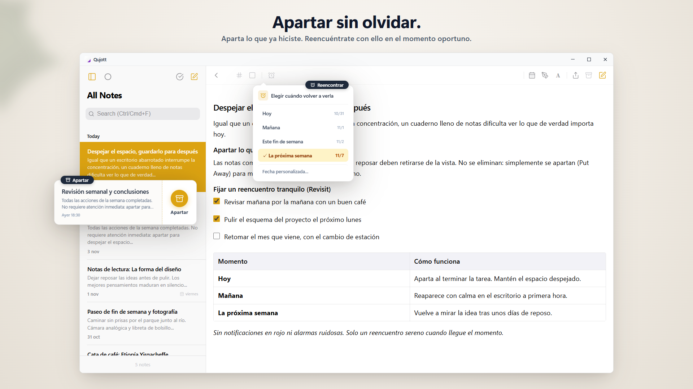
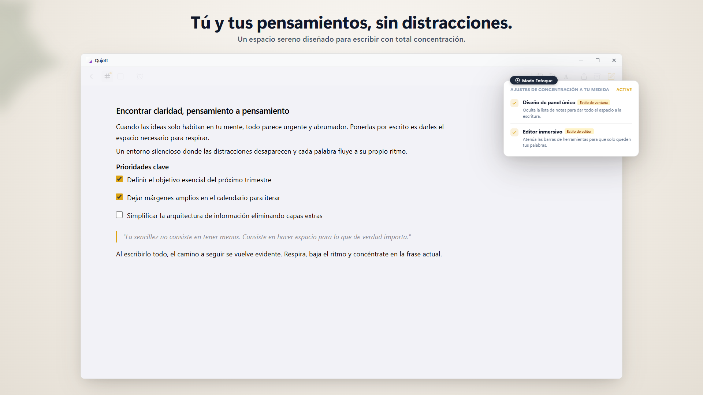
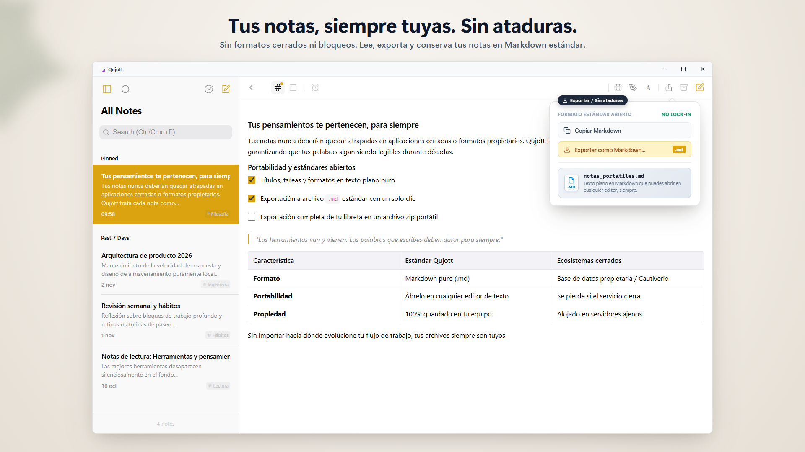
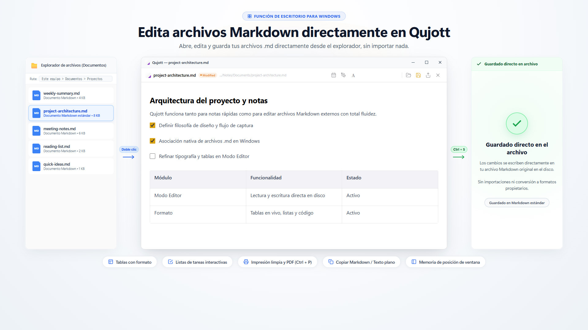
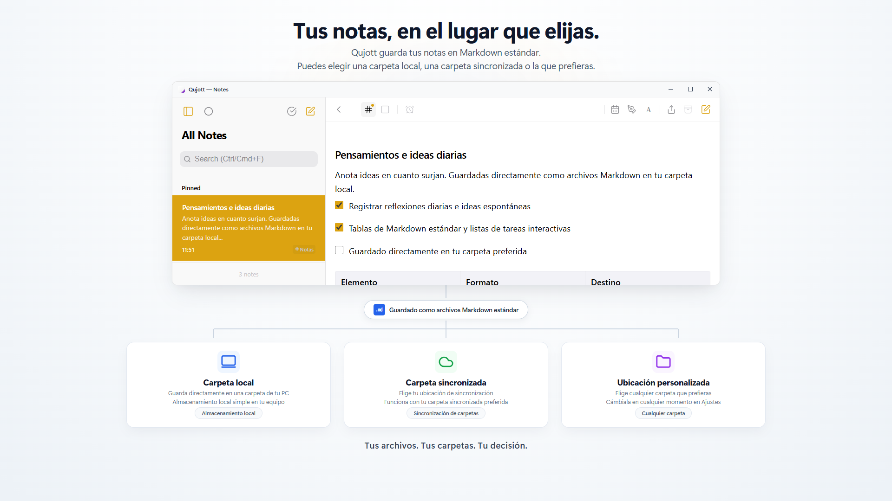
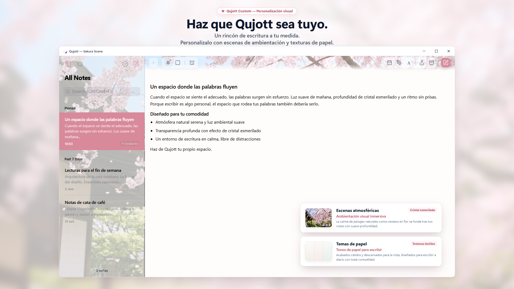

Qujott
Anota tus ideas al instante,
y revísalas cuando quieras.
Qujott combina la sencillez y legibilidad de un bloc de notas con la libertad y versatilidad de un editor de texto.
Organiza después. Mantén tus ideas cerca.
Compatible con Markdown estándar. Guarda y edita tus notas como archivos de texto plano donde elijas.

Un espacio sereno de dos paneles que mantiene tus ideas y notas siempre a la vista
Como un cuaderno de papel junto a tu teclado.
Qujott no es una base de datos abrumadora ni un gestor de tareas complejo.
Como un bloc de papel sobre tu escritorio, está diseñado para una sola cosa: escribir en el instante exacto en que surge una idea.
Sin jerarquías de carpetas previas ni etiquetas obligatorias.
Anota lo que piensas y tenlo a mano. Podrás organizarlo más adelante con calma.
Aparta notas suavemente y reencuéntralas cuando toque.
¿Terminaste con una nota? Apártala (Put Away) sin borrarla para mantener tu espacio despejado.
Programa su reaparición (Revisit) para hoy, mañana o la próxima semana. Sin alarmas estridentes: una reunión natural en el momento oportuno.

Aparta notas para concentrarte y vuelve a verlas en el momento adecuado
Sumérgete por completo en la escritura.
Activa el modo de un solo panel para eliminar barras laterales y distracciones visuales.
Un entorno tranquilo y depurado creado exclusivamente para pensar y redactar libremente.

El Focus Mode elimina distracciones para que te concentres solo en tus palabras
Tus palabras te pertenecen.
Todas las notas en Qujott se guardan como archivos Markdown estándar (.md).
Sin ataduras ni formatos propietarios. Puedes abrirlas, editarlas y exportarlas en cualquier editor de texto.

Notas guardadas en Markdown estándar (.md). Totalmente libres para leer, mover y editar
Abre y edita archivos Markdown directamente.
Abre archivos Markdown existentes directamente en Qujott, edítalos y guarda los cambios en el archivo original.
No requiere importación ni conversión de formatos. Úsalo como tu editor Markdown ágil de uso diario.

Abre y edita archivos Markdown directamente en Qujott y guarda sobre el original (Editor Mode)
Tú decides dónde viven tus notas.
Elige cualquier carpeta de tu PC para guardar tus notas: carpetas locales, carpetas sincronizadas en la nube o unidades externas.
Puedes usar Qujott sin necesidad de crear una cuenta en la nube.

Elige carpetas locales, sincronizadas en la nube o discos externos para guardar tus notas
Haz tuyo tu rincón de escritura.
Personaliza tu entorno con escenas atmosféricas relajantes (como Sakura), efecto de cristal esmerilado y temas de papel (Qujott Pro, compra única).
Con la escala de interfaz (80% al 160%), adapta la aplicación a cualquier pantalla.

Un espacio de escritura acogedor. Personalízalo con escenas de ambiente y escala de interfaz.